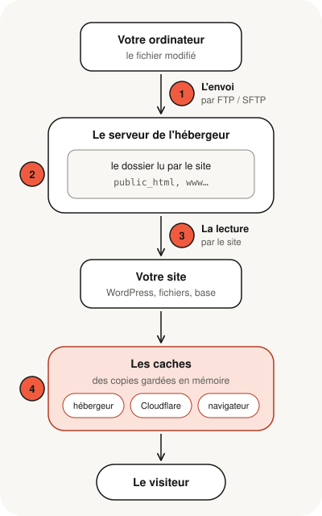

Vous avez modifié un fichier, vous l'avez envoyé sur votre hébergement avec FileZilla ou un autre logiciel de transfert, tout semble s'être bien passé… et votre site affiche toujours l'ancienne version. Rassurez-vous : dans la grande majorité des cas, rien n'est cassé. Entre votre ordinateur et l'écran de vos visiteurs, un fichier franchit quatre étapes, et il suffit qu'il se bloque à l'une d'elles pour que rien ne change. Comprendre laquelle, c'est déjà savoir où chercher.
- Un fichier passe par quatre étapes : l'envoi, l'emplacement sur le serveur, la lecture par le site, puis les caches.
- Le fichier n'est peut-être jamais vraiment arrivé : transfert interrompu, droits refusés, espace plein.
- Il est peut-être arrivé au mauvais endroit : le site ne lit qu'un dossier précis.
- Il est peut-être au bon endroit, mais le site ne s'en sert pas : contenu enregistré ailleurs, autre fichier chargé à sa place.
- Ou bien le site a changé, mais une copie de l'ancienne version vous est encore montrée.
Le trajet d'un fichier, de votre ordinateur à l'écran du visiteur
Quand vous publiez une modification, votre fichier ne va pas directement sur l'écran des visiteurs. Il fait un voyage en quatre étapes.

- L'envoi : le logiciel de transfert copie le fichier de votre ordinateur vers le serveur de votre hébergeur.
- L'emplacement : le fichier est rangé dans un dossier du serveur. Le site, lui, ne lit qu'un dossier bien précis.
- La lecture : à chaque visite, le site va chercher ses fichiers et, souvent, son contenu dans une base de données, pour construire la page.
- Les caches : pour aller plus vite, des copies de la page sont gardées en mémoire à plusieurs endroits, jusqu'au navigateur du visiteur.
Votre modification n'apparaît pas ? Le blocage se trouve forcément à l'une de ces étapes. Voici comment les distinguer.
Problème 1 : le fichier n'est jamais vraiment arrivé
Ce qui se passe. Vous avez lancé l'envoi, mais le fichier n'a pas été copié sur le serveur, ou seulement en partie. Le serveur garde donc l'ancienne version.
Comment le reconnaître.
- Le logiciel de transfert signale des transferts en échec, souvent dans un onglet à part que l'on ne regarde pas.
- Un message mentionne un refus de droits, par exemple une erreur « 550 ».
- Le fichier présent sur le serveur a une date de modification ancienne.
Pourquoi ça arrive. La connexion a été coupée pendant l'envoi, le serveur refuse l'écriture dans ce dossier, l'espace disque de l'hébergement est plein, ou bien vous avez envoyé une autre copie du fichier que celle que vous aviez modifiée sur votre ordinateur.
Problème 2 : le fichier est arrivé, mais au mauvais endroit
Ce qui se passe. Le fichier est bien sur le serveur, mais pas dans le dossier que lit votre site. C'est comme une lettre déposée dans la mauvaise boîte aux lettres d'un immeuble : elle est bien arrivée, mais personne ne l'ouvrira.
Comment le reconnaître. Votre fichier existe bien sur le serveur, mais à un emplacement inhabituel, ou en double : une version là où vous l'avez envoyé, une autre ailleurs.
Pourquoi ça arrive.
- Le fichier a été déposé à la racine du compte FTP, à côté du dossier du site, et non dedans.
- Un dossier de trop s'est glissé dans le chemin, par exemple en glissant le dossier entier au lieu de son contenu.
- Le domaine ou le sous-domaine concerné lit un autre dossier que celui que vous pensiez.
- Après un changement d'hébergeur, le logiciel de transfert se connecte encore à l'ancien serveur, alors que le site est désormais servi par le nouveau.
Problème 3 : le fichier est au bon endroit, mais le site ne s'en sert pas
Ce qui se passe. Le fichier est arrivé dans le bon dossier, mais le site construit la page à partir d'autre chose.
Pourquoi ça arrive.
- Le contenu n'est pas dans les fichiers. Sur WordPress et la plupart des gestionnaires de sites, les textes, les pages et les réglages sont enregistrés dans une base de données. Modifier un fichier ne change pas un texte écrit depuis l'administration du site.
- Ce n'est pas le fichier qui est chargé. Vous avez modifié le thème installé mais pas celui qui est actif, ou un fichier remplacé par un thème enfant.
- Le site charge une autre version du fichier. Beaucoup de sites utilisent une version compressée d'un fichier (par exemple
style.min.css) plutôt que l'original (style.css). - Deux pages d'accueil coexistent. Si
index.htmletindex.phpsont tous deux présents, le serveur n'en affiche qu'un, selon l'ordre défini dans sa configuration. - Les majuscules comptent. Pour un serveur sous Linux,
Logo.pngetlogo.pngsont deux fichiers différents. Une image peut donc s'afficher sur votre ordinateur, qui ne fait pas la différence, mais pas en ligne.
Problème 4 : le site a changé, mais on vous montre l'ancienne version
Ce qui se passe. Votre modification est bien en ligne, mais ce que vous voyez est une copie de la page, enregistrée avant votre changement.
C'est un peu comme des photocopies distribuées à l'avance : tant qu'on ne les a pas refaites, tout le monde lit l'ancienne version du document.
Où se trouvent ces copies. À plusieurs étages, et chacune se renouvelle à sa façon :
- dans votre navigateur ;
- dans une extension de cache du site, fréquente sur WordPress ;
- chez votre hébergeur, qui peut garder des copies des pages ;
- chez un intermédiaire comme Cloudflare, s'il est placé devant votre site.
La seule vérification à faire vous-même. Ouvrez la page dans une fenêtre de navigation privée, ou sur votre téléphone en coupant le Wi-Fi. Si la modification y apparaît, c'est le cache de votre navigateur qui vous montrait l'ancienne version : le site, lui, est à jour.
| Ce que vous constatez | Problème probable |
|---|---|
| Le logiciel de transfert affiche des échecs ou un refus | 1. L'envoi |
| Le fichier se trouve en double, ou dans un dossier inhabituel | 2. L'emplacement |
| Le changement concerne un texte, une page ou un thème WordPress | 3. La lecture |
| Une image s'affiche sur votre ordinateur mais pas en ligne | 3. La lecture (majuscules) |
| La modification apparaît en navigation privée, pas dans votre navigateur habituel | 4. Le cache du navigateur |
| La modification n'apparaît nulle part, même en navigation privée | 2, 3 ou 4 : un cache côté site, ou l'emplacement |
Pourquoi il vaut mieux ne pas tout renvoyer « au cas où »
Face à un site qui ne change pas, le premier réflexe est souvent de tout renvoyer, d'écraser, de supprimer. C'est là que les vrais dégâts arrivent.
- Certains fichiers sont invisibles dans les logiciels de transfert, tant qu'on n'a pas demandé à afficher les fichiers cachés. C'est le cas du fichier
.htaccess, qui règle les redirections et une partie de la sécurité : on peut l'écraser ou l'oublier sans s'en rendre compte. - Des fichiers de configuration contiennent les accès à la base de données. En écraser un par une ancienne version peut rendre tout le site inaccessible.
- Vider un cache au mauvais endroit ne règle rien, et peut ralentir le site pour tout le monde le temps qu'il se reconstruise.
- Plusieurs corrections faites à l'aveugle se superposent, et il devient difficile de savoir laquelle a réglé ou aggravé le problème.
Identifier l'étape qui bloque, puis intervenir à ce seul endroit, avec une sauvegarde préalable : c'est ce qui fait la différence entre une correction de quelques minutes et une panne de plusieurs heures.
Un fichier envoyé qui « ne change rien » s'est bloqué à l'une de ces quatre étapes : l'envoi, l'emplacement, la lecture ou le cache. Avant de tout renvoyer, vérifiez en navigation privée : si la modification y apparaît, votre site est déjà à jour.